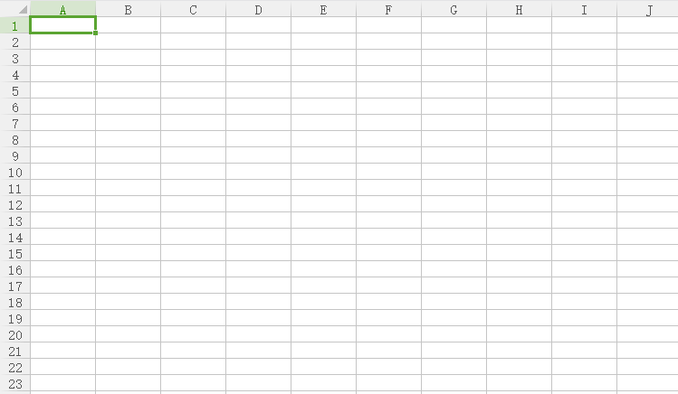
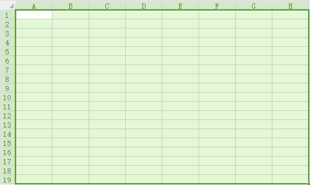
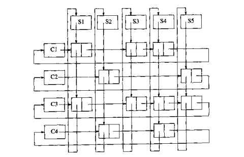

在深入浅出数据结构系列前面的文章中，我们一直在讨论“线性表”，其形式如下：
由a1,a2,a3,……a(n-1)个元素组成的序列，其中每一个元素ai(0<i<n)都是一个“原子”，“原子”的意思就是说元素本身是一个个体，所有元素都是相同的结构。
但是在我们常见的某些应用，比如Excel的表格中，我们发现表并不一定是线性表，Excel中的表就明显是二维的结构

那么在数据结构中，我们会使用这种广义上的表吗？答案是会，我们也会、或者说我们也能使用这样的非线性表。其实我们早就已经在使用这样的非线性表、广义表了，那就是多维数组。不难发现二维数组就可以抽象成Excel当中的表的样子。那么，广义表的定义是怎样的呢？其实很简单，就是在线性表的基础上稍加修改，我会用绿色将修改了的部分标识出来：
由a1,a2,a3,……a(n-1)个元素组成的序列，其中每一个元素ai(0<i<n)可能又是一个广义表。
可能会有人发现一个小小的问题，就是为什么我又将广义表叫作多重表呢？这其实只是一个理解角度的不同而带来的不同叫法罢了，多重表这种叫法想表达的主要意思是表中的元素可以是另一个表，而这另一个表中的元素又可以是一个表，相当于“一重又一重”的表，所以叫多重表。这个叫法其实并不是很重要。
讲到这儿，多重表的定义和可能的使用场景（想想多维数组可能使用的情况）想必大家都心里有数了，但是这篇博文肯定不能就这么结束了😉 其实我们今天真正想讨论的，是当多维数组不能满足或者说不适合我们遇到的情况时，我们该如何用其他途径实现一个多重表？
为了说明这一点，显然我们需要先举一个多维数组不适合、却又需要使用多重表的例子：
假设我们的程序要存储一所大学的学生选课情况，然后允许用户执行两个操作，一个是查询某名学生选了哪些课程，另一个是查询某个课程有哪些学生选择了。对于这样的应用场景，显然需要使用到一个多重表，准确的说是一个二维的多重表，其中一维表示课程，另一维表示学生，就像下面的图。那么提到二维的多重表，我们脑海中最先浮现的应该就是二维数组了😁

（存储学生选课的抽象的二维多重表，横向代表学生A,B,C……纵向代表课程1，2，3……，若某一项打勾则表示该学生选了该课程，比如若A1打勾则表示学生A选择了课程1）
但是，现在情况有了新条件，这一所大学我们知道三个信息：学生人数大约为5000人，学校所有开设的课程大约有1000门，一般来说一个学生选的课程也就10门。
那么，根据这三个信息我们会发现，如果我们使用二维数组来存储学生选课的信息，总共将需要500万个元素，而平均来说其中只有5万个元素是“打勾”的，其它495万个元素都是“空”的，这样的浪费显然是巨大的！
所以我们现在需要的就是一个“不那么浪费空间”的二维多重表。回顾我们学习线性表的历史，我们会发现，为了避免使用一维数组带来的巨大浪费，我们使用了一维的链表来替代，那么现在我们在二维数组上遇到了麻烦，是否可以用“二维链表”来替代呢？或者换句话说，是否有用链表实现的多重表呢？答案是肯定的，实现也是简单的。其实就是令每个课程作为一个链表的表头，每个学生作为一个链表的表头，除去学生结点和课程结点，其他结点均有一个nextStudent指针和一个nextCourse指针，分别指向下一个学生和下一门课程。我们用一张图片来展示一下用链表实现多重表大致是“长什么样”的：

不难看出，使用链表来实现需要的二维多重表能够节省下很多的空间（495万个结点），因为我们“跳过了”不需要的那些结点。那么现在，我们给出实现这个二维多重链表的各个结点定义：
struct node
{
bool choose;
struct node *hNextNode;
struct node *vNextNode;
struct student *student;
struct course * course;
}
struct student
{
char name[SIZE];
struct node *firstNode;
}
struct course
{
char name[SIZE];
struct node *firstNode;
}有了结点的定义，抽象图，想来实现二维多重链表也不是什么难事了，所以对这个问题的讨论就到此为止。
稍微回顾一下本文讨论的顺序就不难发现，其实我们只是将“一维表中浪费空间的解决办法”扩展到了“二维表中浪费空间的解决办法”罢了，也可以说将“链表替代数组”扩展到了“二维链表替代二维数组”的情况，类似的我们还可以继续扩展到更高的维度，比如上面的例子中，我们除了学生、课程，还可以有“某个学生在某门课程的历次成绩”，这样一来就出现了第三维度。